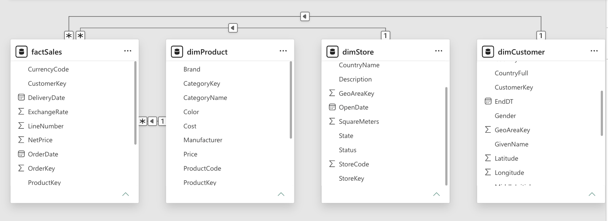
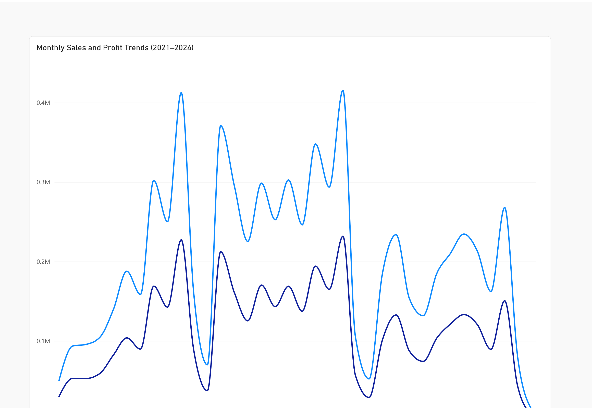

AI Community & Sentiment Analysis
Analyzed Reddit discussions from r/ChatGPT and r/Futurology to explore how conversations about AI differ
across school, work, daily life, tasks, and concerns.
Data cleaning
Trend analysis
Sentiment
Visualization
Nutrition, Price & Healthy Food Marketing
Analyzed Whole Foods product data to examine relationships between price, nutrition, and “healthy”
marketing claims. Integrated USDA FoodData Central data and created value metrics such as protein per dollar.
Data merging
REST API
Matplotlib
Feature engineering
Business Analytics & Visualization
Used Power BI to analyze student, automobile, and retail datasets, exploring performance trends,
vehicle efficiency, correlations, store geography, and operational metrics.
Dashboards
Scatterplots
Maps
Business insights
04
Power BI
Retail Analytics
10 Pages
Retail Sales Analytics — Power BI
Explore a 10-page retail sales analysis featuring a star schema, product performance, store revenue, category profitability, customer purchase history, delivery times, and sales trends.


Explore all 10 Power BI pages ↗
Data Modeling
Business Intelligence
Visualizations
05
SQL
Portfolio Project
In Progress
SQL Data Analysis
A growing collection of SQL analyses that answer business questions using relational data. The project
demonstrates filtering, aggregation, grouping, joins, and clear interpretation of query results.
Next:
Add selected sandbox queries, result screenshots, and short explanations.